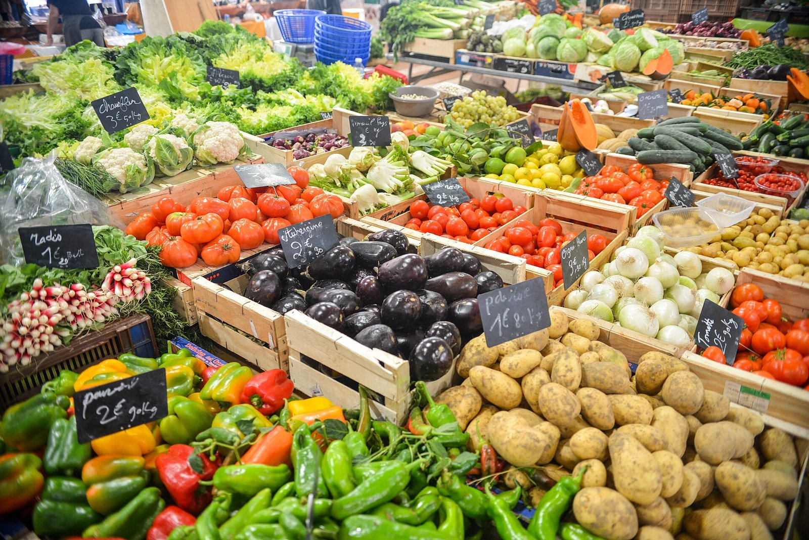

Правильное питание без диет: с чего начать и что работает

Почему диеты не работают вдолгую
Жёсткие ограничения дают быстрый результат, но организм воспринимает их как стресс. Метаболизм замедляется, растёт тяга к запрещённым продуктам, а после срыва вес часто возвращается с запасом. Задача не в том, чтобы «сесть на диету», а в том, чтобы изменить привычки так, чтобы их можно было держать годами. Это и есть основа рационального питания.
Базовая тарелка: простое правило порций
Не нужно считать каждую калорию. Достаточно мысленно делить тарелку на части:
- половина — овощи и зелень (свежие, тушёные, запечённые);
- четверть — источник белка: рыба, курица, яйца, творог, бобовые;
- четверть — сложные углеводы: гречка, овсянка, бурый рис, картофель, макароны из твёрдых сортов.
Такой подход автоматически снижает калорийность без чувства голода и подходит большинству взрослых людей без медицинских противопоказаний.
Белок, клетчатка и вода — три опоры
Белок сохраняет мышцы и даёт сытость: ориентир — 1,2–1,6 г на кг веса для тех, кто тренируется, и около 1 г для малоподвижных. Клетчатка (овощи, фрукты, цельные крупы, бобовые) поддерживает кишечник и сглаживает скачки сахара в крови. Вода — 25–30 мл на кг веса в сутки, не считая чая и кофе. Эти три пункта дают больше, чем любые модные суперфуды.
Что убрать из рациона без фанатизма
Речь не о полном запрете, а о сокращении:
- сладких напитков и пакетированных соков — основной скрытый источник сахара;
- колбас, сосисок, готовых соусов — много соли и добавок;
- выпечки и снеков как ежедневной привычки, а не редкого удовольствия;
- алкоголя — он тормозит жиросжигание и повышает аппетит.
Правило 80/20: 80% рациона — полезная база, 20% — то, что нравится. Это снижает риск срывов.
Как выстроить режим под реальную жизнь
- Не пропускайте завтрак, если он вам нужен: овсянка, яйца, творог с ягодами.
- Готовьте дома чаще — так вы контролируете состав блюд.
- Планируйте покупки на неделю и держите под рукой полезные перекусы: орехи, фрукты, кефир.
- Ешьте медленно, без экрана — сытость приходит через 15–20 минут.
- Не запрещайте себе еду после 18:00, если вы ложитесь поздно: важен общий суточный баланс, а не время на часах.
Движение как часть системы
Питание работает лучше в связке с активностью. Достаточно 150 минут умеренной нагрузки в неделю — быстрая ходьба, плавание, велосипед — плюс 2 силовые тренировки для сохранения мышц. Это не про спортзал до изнеможения, а про регулярность.
Вывод
Правильное питание — это не временная мера, а набор устойчивых привычек: сбалансированная тарелка, достаточно белка и клетчатки, меньше скрытого сахара и больше домашней еды. Начинайте с одного-двух изменений в неделю, а не с тотальной перестройки. При хронических заболеваниях, беременности или расстройствах пищевого поведения рацион стоит согласовать с врачом или нутрициологом — самодеятельность здесь может навредить.
Ссылки на маркетплейсы и сервисы ведут на проверенные предложения, для вас цена не меняется.
Найти на Маркете →